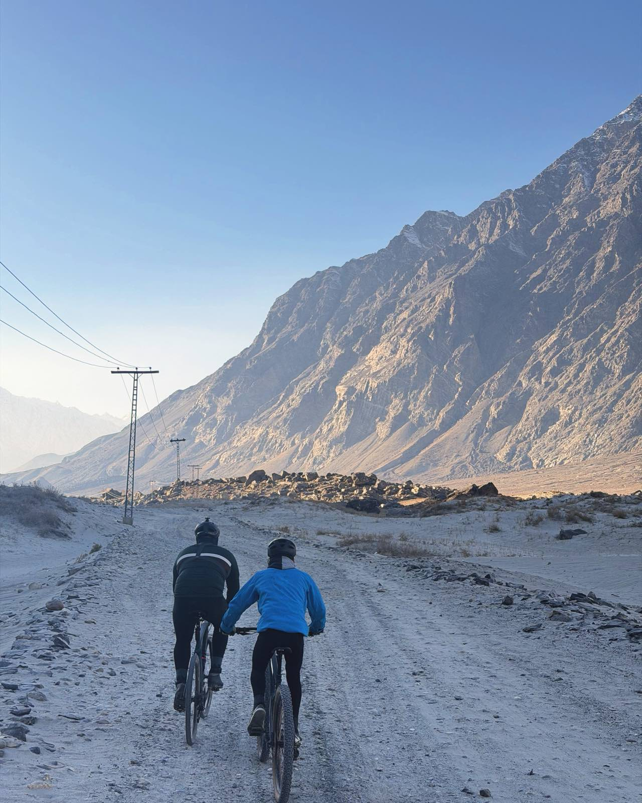
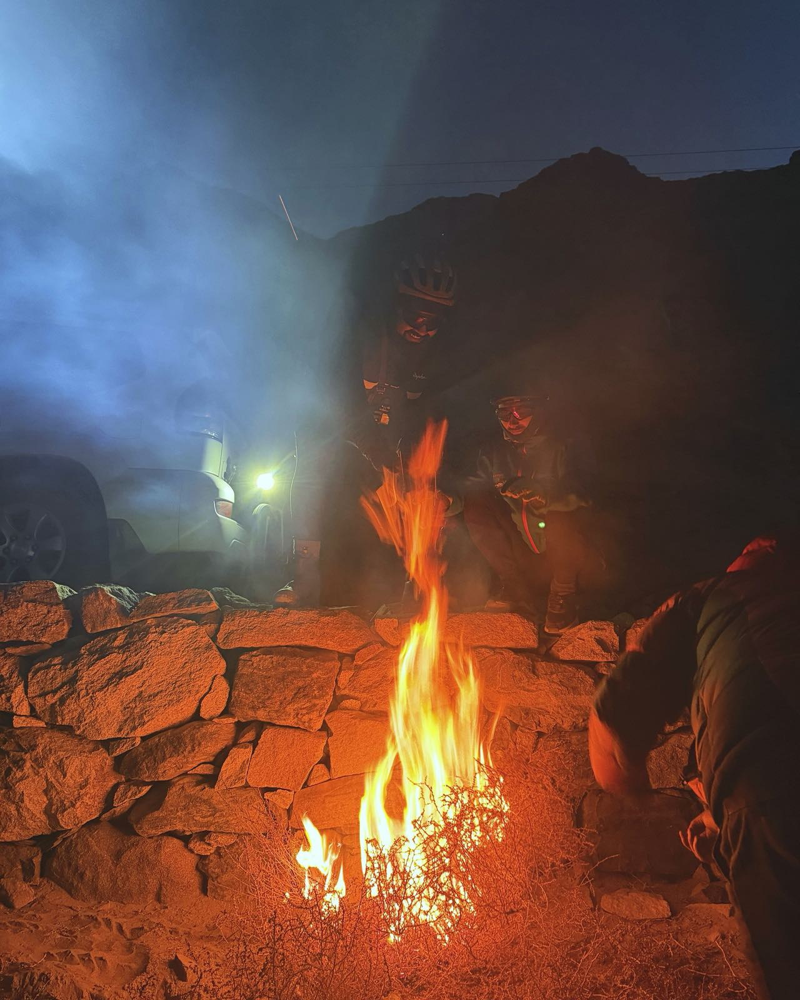

Green in summer, gold in autumn: walled lanes, apricot orchards, and the long glide into the valley of forts. The same valley hides a cold desert at Sarfaranga, the poplar tunnels of Gulabpur, and the big-sky road toward Sildi. Traffic rules are simple: yaks, sheep and duck convoys have right of way.
Still enough to hold the mountains upside down. Gravel all the way in, turquoise all the way round.


